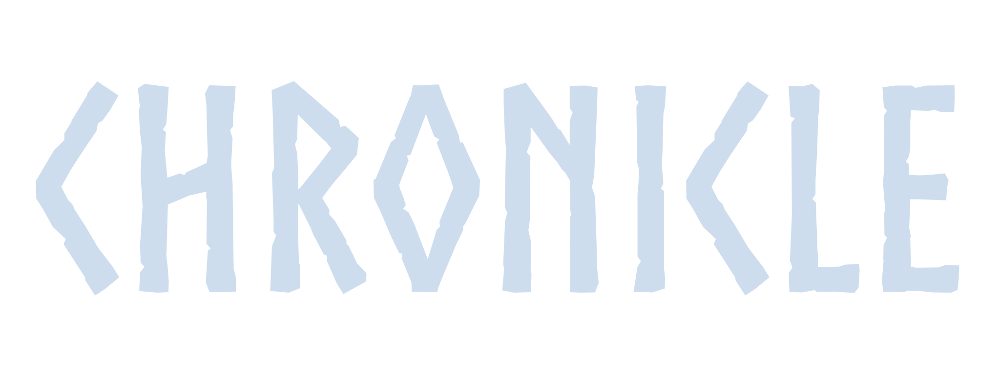

Architecture & behavior diagrams — a companion to the GitHub repo's README. See also the docs index.
What runs inside the Skyrim process (C++) vs. what runs outside it, natively, as a Python service.
flowchart TB
ENGINE["Skyrim Engine (base game)"] <--> BRIDGE["ChronicleBridge -- SKSE C++ plugin"]
BRIDGE =="HTTP: events in / state out"==> LISTENER
BRIDGE --> POS
subgraph PYTHON["Outside Skyrim"]
LISTENER["listener.py (HTTP)"] --> CORE["chronicle/ engine"] --> LOG["Frame log (JSONL)"]
end
LOG --> DASH["dashboard (Vue) -- debug UI"]
subgraph MECH["Game-side mechanisms"]
direction TB
POS["Position Streamer -- live NPC coords"] ~~~ HYD["Hydration Poller -- writes grudge as rank"] ~~~ AVOID["Avoidance Poller -- flips AI-package flag"] ~~~ VEND["Vendor Price Hook -- marks up barter price"] ~~~ EVID["Evidence Poller -- spawns object from a belief"]
end
MECH -- "writes back into game state" --> ENGINE
classDef ingame fill:#fdf6d8,stroke:#c9b458,color:#4a3f1a;
classDef host fill:#e6e9f7,stroke:#8892c9,color:#22254a;
classDef debug fill:#f3e6f7,stroke:#a888c9,color:#3a2245;
class ENGINE,BRIDGE,POS,HYD,AVOID,VEND,EVID ingame
class LISTENER,CORE,LOG host
class DASH debug
style PYTHON stroke-dasharray: 6 4,fill:none,stroke:#8892c9
style MECH stroke-dasharray: 6 4,fill:none,stroke:#c9b458
the mod: Skyrim engine + ChronicleBridge (C++) the service: native Python, outside the game the dashboard: Vue debugging UI
The mechanisms are all built and compiled, but none has been confirmed working against a live, running game yet.
Gossip travels only through sampled encounters (shared location + schedule overlap), never a broadcast. Each retelling can mutate one detail and always loses some confidence.
sequenceDiagram
participant World as Game event
participant A as NPC A (witness)
participant B as NPC B
participant C as NPC C
World->>A: crime witnessed / NPC death
Note right of A: forms a Claim + Belief (confidence + strength)
Note over A,B: encounter sampled: shared location, probability roll
A->>B: tells the claim (tell-probability gate)
Note right of B: hears it -- may mutate one slot
Note over B,C: later encounter, different location
B->>C: retells it -- confidence decays another hop
Note right of C: forms its own belief: weaker, possibly mutated
Dormant means ~45 game-days with no retelling. Forgotten fires independently,
whenever the underlying belief's gist strength decays past its floor, whichever stage it happens to be in.
stateDiagram-v2
[*] --> Heard: first exposure
Heard --> Repeated: retells it
Repeated --> Repeated: retold again
Heard --> Dormant: goes quiet
Repeated --> Dormant: goes quiet
Dormant --> Repeated: retold again
Heard --> Forgotten: gist decays out
Repeated --> Forgotten: gist decays out
Dormant --> Forgotten: gist decays out
Forgotten --> [*]
Grudges decay continuously rather than clearing instantly, so a fresh harm and a genuinely-forgiven one
behave differently even at the same raw severity. Avoiding fires once decayed severity crosses
a threshold; Cooled fires once it decays below a separate, lower forgiveness floor.
stateDiagram-v2
[*] --> NoGrudge
NoGrudge --> Grudge: harm occurs
Grudge --> Avoiding: crosses threshold
Avoiding --> Grudge: drops back down
Grudge --> Cooled: fully forgiven
Avoiding --> Cooled: fully forgiven
Cooled --> Grudge: new harm
Cooled --> [*]
Avoiding is what a live game session would show as visible behavior — two NPCs breaking off
their usual routine to keep apart — driven purely by decayed grudge severity, no scripting involved.